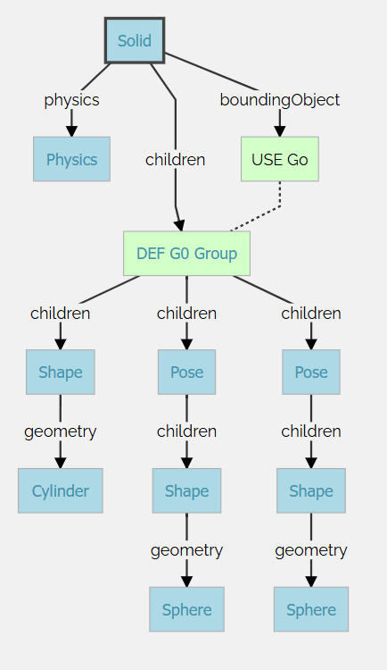

Tutorial 4 <<
Previous Next >> Tutorial 6
Tutorial 5
https://cyberbotics.com/doc/guide/tutorial-5-compound-solid-and-physics-attributes
透過聚合形狀節點，可以建立比我們以前見過的更複雜的實體節點。實體的物理屬性和圖形屬性都可以由多個形狀節點組成，每個Shape節點都可以放置在Pose節點中，以改變其相對位置和方向。 群組節點也可用於對多個子節點進行分組。

2. 物理屬性
我們可以透過以下方式設定 Solid 節點的物理屬性：
質量與密度只能設定其中一個，另一個需設為 -1
1. mass：設定固體的總質量（單位：公斤）
2. density：設定固體的密度（單位：公斤/立方公尺），與體積相乘得到總質量。
預設情況下，實體節點的質心設定在其原點（由實體的平移場定義）。可以使用物理節點的欄位(centerOfMass)來修改質心。質心是相對於固體的原點指定的。
3. 設定旋轉
透過 Pose 節點的 rotation 欄位，我們可以設定物體的旋轉:
旋轉格式：使用歐拉軸與角度表示法。
前三個值：定義旋轉軸的單位向量。
第四個值：定義繞該軸的旋轉角度（單位：弧度）。
4.選擇邊界物件
Sphere（球體）：效率最高。
Box（方塊）：效率較高。
Capsule（膠囊體）：效率中等。
Cylinder（圓柱體）：效率較低。
不建議使用 IndexedFaceSet，因為其效率較低，且可能存在一些問題
5. 設定接觸屬性
當兩個固體發生碰撞時，可以使用 ContactProperties 節點來設定接觸行為:
1. 設定材料類別：透過 contactMaterial 欄位設定固體的材料類別。
2. 設定摩擦力：在 ContactProperties 節點中設定 coulombFriction 欄位來調整摩擦力。
6. 設定物理參數
在 WorldInfo 節點中，可以設定以下物理參數：
1. basicTimeStep：設定物理步驟的時間間隔（單位：毫秒）。
建議值：8 至 16 毫秒
2. ERP（Error Reduction Parameter）：設定誤差修正參數。
3. CFM（Constraint Force Mixing）：設定約束力混合參數。
Tutorial 4 <<
Previous Next >> Tutorial 6